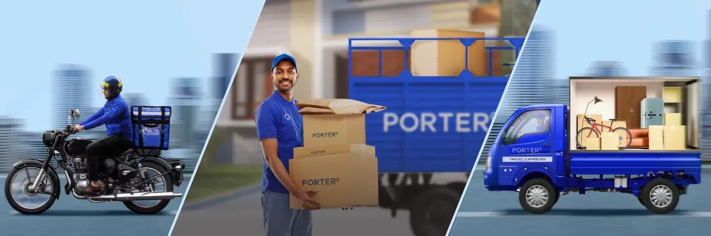

And thanks to you, we are growing each & every day!
3 Countries | 15 Lakh+ Driver Partners | 1 Crore+ Customers |10 Crore+ Trips

Welcome to the Porter Driver Partner Guidance Portal,your trusted resource for delivering every order with confidence, efficiency, and professionalism. This platform is designed to support driver partners by providing clear guidance on delivery procedures, road safety, vehicle maintenance, customer service, and operational best practices. Whether you're starting your first delivery or have years of experience, you'll find practical information to help you navigate daily challenges and maintain high standards of service.
Our goal is to empower every driver partner with the knowledge and resources needed to ensure timely deliveries, protect customer shipments, and create a reliable delivery experience. By following the guidelines and recommendations available on this portal, you can improve your performance, build customer trust, maintain a strong partner rating, and contribute to a logistics network that millions of customers depend on every day.
At Porter, our mission is to empower every Driver Partner with the knowledge, tools, and support needed to deliver exceptional logistics services. We are committed to promoting safe driving practices, operational excellence, and customer-first service while creating opportunities for sustainable growth and professional development. Through continuous guidance and innovation, we strive to help our partners perform every delivery with confidence, efficiency, and responsibility.
Our vision is to build India's most trusted and technology-driven logistics network by enabling Driver Partners to provide reliable, safe, and timely delivery services. We aspire to create a future where every delivery is completed with professionalism, every customer receives outstanding service, and every Driver Partner has the opportunity to grow, succeed, and contribute to a smarter transportation ecosystem.
Our core values define the way we operate and the standards we uphold in every delivery. Safety remains our highest priority, ensuring the well-being of our Driver Partners, customers, and everyone on the road. We are committed to providing reliable and timely logistics services while maintaining honesty, accountability, and professionalism in every interaction. By embracing innovation, teamwork, and continuous improvement, we strive to create a delivery experience that builds trust, exceeds customer expectations, and supports the long-term growth of our Driver Partner community.
The Driver Partner Guidance Portal serves as a trusted source of information that helps partners perform their responsibilities with confidence and consistency. It brings together essential operational procedures, safety recommendations, customer service practices, and practical tips in one place, making it easier to stay informed and prepared. By following the guidance provided, Driver Partners can enhance their skills, improve service quality, reduce operational challenges, and contribute to a dependable logistics network that customers can rely on every day
We are committed to creating an environment where every Driver Partner has access to the knowledge and support needed to succeed. Through clear guidance, practical resources, and continuous learning, we encourage safe driving, responsible delivery practices, and professional customer interactions. Our commitment extends beyond successful deliveries—we aim to build lasting trust, promote operational excellence, and empower our partners to achieve consistent growth while delivering outstanding service across every journey.
3 Countries | 15 Lakh+ Driver Partners | 1 Crore+ Customers |10 Crore+ Trips
1. How do I accept a delivery request?
Open the Porter Partner app, review the pickup and drop details, and tap Accept if you're available to complete the delivery.
2. What should I do if I cannot find the pickup location?
Use the in-app navigation and contact the customer for directions if needed. If you're still unable to locate the address, reach out to Porter Support.
3. What if the customer is unavailable at the delivery location?
Try contacting the customer through the app. Wait for the recommended time and follow the app's instructions before contacting Porter Support.
4. Can I cancel an accepted order?
Yes, but unnecessary cancellations may affect your acceptance rate and overall performance. Cancel only when absolutely necessary.
5. How can I increase my earnings?
Accept more deliveries, stay online during peak hours, maintain a high customer rating, reduce cancellations, and complete orders on time.